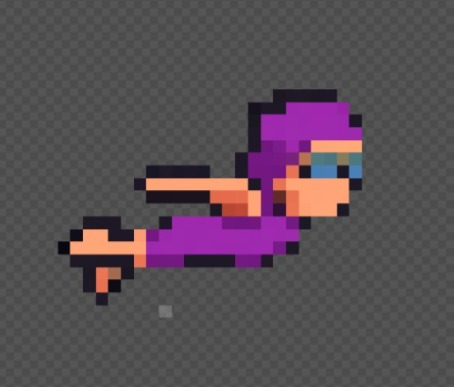

AQUATIC FURY
O Despertar da Maré Negra
O Mar Não Esquece. O Nadador Luta.
Mergulhe nas profundezas poluídas do oceano em Aquatic Fury, um intenso boss-rush 2D onde a última esperança do ecossistema, o Nadador, enfrenta as manifestações físicas da catástrofe ambiental. Conheça as criaturas colossais que habitam as áreas de desastre e protegem a poluição.
1. NADADOR
O corajoso, que apenas com equipamentos de natação, enfrenta cada desafio com coragem, para o bem dos oceanos.
2. MONSTRO DE METAL
Uma criatura colossal feita de sucata, navios afundados e rejeitos industriais. Lento, mas de força esmagadora, ele usa âncoras e prensa hidráulicas como arma. Sua pele é blindada e só se torna vulnerável após seus ataques mais pesados.
3. MONSTRO DE PLÁSTICO
Rápido e enganoso, nascido de garrafas, sacolas e microplásticos. Ele se move em redemoinhos e usa a confusão para sufocar e envenenar a área. É frágil, mas sua velocidade e os padrões de lixo tornam difícil acertá-lo.
4. MONSTRO DE PETRÓLEO
O desafio final, uma massa amorfa e viscosa de óleo e alcatrão. Ele não apenas ataca com jatos de piche, mas sua presença inunda a arena, limitando a visão e a movimentação do Nadador. O calor e o fogo são as únicas fraquezas em sua defesa quase impenetrável.